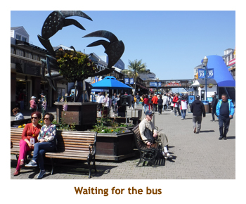
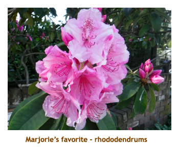

[ Home ] [ Travel ] [ Photography ] [ Pets ] [ Games] [ Rowing] [ Physics ]


Cruising on the Norwegian Bliss
Travel
Cruises
Past Cruises (Diaries)
Future Cruises
Rogues Galleries
Land Trips
Diaries (Land Trips)
Hawai'i - Big Island - 04'01
Hawai'i - Maui - 05'02
Hawai'i - Big Island - 04'03
Hawai'i - Kaua'i - 09'04
Hawai'i - Big Island - 04'06
Hawai'i - Maui - 04'06
Mainland China - 05'07
Phoenix, Arizona - 12'07
Greek Isles - 05'08
Hawai'i - Kaua'i - 09'08
Hawai'i - Big Island - 09'09
Hawai'i - Maui - 05'12
Hawai'i - Big Island - 04'13
Ireland - 08'13
Mexico - Cancun 11'13
France/Belgium/Lux 07'15
Hawai'i - Big Island - 05'17
England / Wales - 06'17
Hawai'i - Big Island - 09'19
Photography
Cameras
Underwater
Pets
Tara
Blackie
Whitey
Muffy
Ollie
Rusty
Fluffy
Rufus&Dufus
Games
Rowing
Physics
Rating (out of 5):
Ship  Food
Service
Food
Service  Itinerary
Itinerary 
This was a surprising booking (to me) all round. Over the years we had heard plenty of negative feedback of Norwegian cruises and had vowed never to try one. We also consider a 7 night cuise to be short and either back-to-back 7 nighters or book a longer cruise. And thirdly, we do appreciate the smaller ships. Well, the surprise was that Marjorie booked a 6 night on the huge Norwegian Bliss. I certainly couldn't complain though as this was our fourth cruise in four months and the Bliss was almost brand new. What made this cruise extra special was that we were accompanied by Marjorie's sister Lynn and nephew John, and my high school friend Mary. The ship was sailing quite full, with 4530 passengers (double occupany max 4,400).
Our stateroom (a mini-suite) was a bit of a shock but wouldn't have been if I had read the description in the literature. We had booked suites a couple of times on HAL and Princess and received balcony cabins that were 1.5 or 2.0 times the width of a normal balcony cabin. In this case the cabin was identical in width to a standard cabin and the "suite" part was actally 4 feet of extra length. This was taken up by the bathroom with a double sink, huge shower and dance floor. So, the fact that we were in a suite was only visible when in the bathroom.
The service onboard was not up to what we had come to expect. Our "morning" room makeup was often not done until 1:00 or 1:30. One evening makeup was missed - forgotten? In the restaurants I often had to order my soda several times (especially a refill). And one morning I ordered my usual omelet with "everything" and it came as a a lump of cooked egg with nothing in it! The staff seemed to really care, but maybe they are responsible for too many staterooms or too many tables.
The ship was not conducive to trivia. The sessions were held in the atrium lobby that had theatre type row seating. This minimized the ability to have teams participating. The guest services and shore excursions desks were part of the atrium.. It was extremely noisy. If you sat in the wings, you couldn't see the two story screen on which the questions were projected. Apart from a few teams of 2 it was every man for himself. This was probably the most poorly designed trivia area we have encountered at sea
Finally the itinerary was not exotic, hitting ports we were very familar with. This made it an easy
cruise with no need to book any excursons. In our younger days of cruising I would have felt
cheated, but now I really enjoy relaxing on the ship. The entertainment was OK. We enjoyed
"The Jersey Boys" (Marjorie saw it twice) but the "Havana" show was loud and unfamiliar so
we only lasted 20 minutes or so.
Pre-Cruise (Apr 27) - Traveling to Los Angeles
Day 1 (Apr 28) - Boarding in San Pedro
Days 2,4 (Apr 29, May 1) - Two days at sea (not consecutive)
Our two sea days were typical of any cruise we have been on. As the Bliss was new to us we spent a lot of time exploring the ship. There were a few things that set it apart from other ships. Firstly there was a 2-deck high go-kart race track on the pool level. It was $10 per ride, which incuded 8 laps of the circuit. The cars were electric (ie. quiet) and the roar-r-r-r sound was provided by speakers in the crash helmets. Marjorie and I did not try them but John did and said they were a lot of fun.. The second unusual feature was a twin bowling alley (indoors). It was narrower and only half the length of a standard lane, and used 5 pin balls and stubby 10 pins. We had breakfast and lunch each day in the MDR. Omelets for me was the norm. We decided that the larger MDR was too noisy and prefered either of the two smaller MDRs (same food though). One of the days we attended "The Jersey Boys". They did a very good job of it.
Day 3 (Apr 30) - A day in San Francisco
After a fortifying lunch we ambled back out again, this time headed towards Pier 37 (Fisherman's Wharf). It was around 1:00 PM by this time. By chance the free Fisherman's wharf shuttle double decker bus was waiting for us a few steps from the ship. We hopped aboard and had a lovely drive past the piers to Pier 39 (Fisherman's Wharf). After exiting the bus we went for a stroll along the famous pier accompanied by quite a throng of tourists. The shops were boutique style and quite expensive. Marjorie was looking for t-shirts, but they were too expensive. At the end of the wharf were the famous docks where hundreds of barking sea lions lay in the warm sun. What a racket! We watched the sea lions for quite a while and then walked back to the SF Aquarium building and spent an hour or so wandering through the exhibits. The highlights were the lively river otters and the jellyfish tank. An excellent aquarium! After leaving the aquarium it was time to head back to the ship before it left without us. We decided we had had enough walking and sat waiting for the double decker shuttle to arrive (about 3:00). We waited for about half an hour and then gave up and walked back. As we walked back there was still no sign of the bus. We were back aboard by 4:00, time to watch the sail away and get ready for dinner. We had dinner at the MDR with the gang and reported on what we had each done in SF. After dinner (in the MDR) we caught our first entertainment offering "Havana". It was a song and dance spectacle featuring a program created by Norwegian, so we didn't know any of the music. It was very loud so we only lasted about 20 minutes. We wandered the ship and then went to bed.
|  |
Day 5 (May 2) - Visiting D&J in Victoria
Today we had an unusual docking schedule at Victoria being from 1:00 PM to midnight.
So, we had the morning to relax
and watch the scenery go by (gulf islands). For the afternoon we had arranged
with Dave & Joan that they would pick us up about 2:00 and take us to lunch at Il
Terrazo restaurant. The 1 hour delay was because, this being the first Canadian
port in the cruise, we all had to go through Canada customs before the ship
would be cleared for deboarding. Lynn and John had booked a whale watching
tour from 3:30 to 6:30, so Dave organized two "sister shifts" - lunch with
Marjorie and me, and a late dinner with Lynn and John at 7:00. So, D&J picked
us up from the ship and we had a wonderful meal at our favorite Victoria
restaurant. Afterwards we walked over to Roger's Chocolates to pick up some
treats for the kids. While there, who should we meet but our cruise mate
Mary. It was nice because Dave also knew Mary from high school and hadn't
seen each other since. We then drove to Beacon Hill Drive-in for an ice
cream. Then Dave delivered us back to the ship about 4:00 We walked out
the causway to get a great view of out ship. We were not really hungery
for dinner, so just did a quick meal in the buffet. After dinner Marjorie
went for a second dose of "Jersey Boys" while I stayed back and read. It
was a great day and we really appreciated the blue sky and all the spring
fllowers. (And seeing D&J of course).
|  |
Day 6 (May 3) - A visit to Vancouver
Day 7 (May 4) - Disembarking in Vancouver
 We were up at 6:30 and Marjorie headed up to the top deck to take some photos in the early morning sun. By fluke
she arrived just minutes after two Holland America ships collided. (Oosterdam and Nieuw Amsterdam). One of the
ships was already docked, while the other one was just backing in. Marjorie got some photos of the row of cabins that
were damaged. We headed to the buffet for a quick breakfast. Our call to disembark came fairly quickly and we
headed off the ship to get our bags and leave the terminal building. We had done customs in Victoria, so there were
no delays. We walked the short distance to the canada Line terminus and boarded the train for the airport We were to
the airport by about 10:30, checked in, did security and were at the departure lounge well before our 12:00 flight. It was
a quick flight to Calgary. After getting our bags, Chrissy came from the cellphone lot and drove us back to her place.
We visited then transferred to our car for the short trip home. We were in time to pick up Rusty from the kennel.
It was nice to be home again with the kitties. The cruise was great - lots of visiting.
We were up at 6:30 and Marjorie headed up to the top deck to take some photos in the early morning sun. By fluke
she arrived just minutes after two Holland America ships collided. (Oosterdam and Nieuw Amsterdam). One of the
ships was already docked, while the other one was just backing in. Marjorie got some photos of the row of cabins that
were damaged. We headed to the buffet for a quick breakfast. Our call to disembark came fairly quickly and we
headed off the ship to get our bags and leave the terminal building. We had done customs in Victoria, so there were
no delays. We walked the short distance to the canada Line terminus and boarded the train for the airport We were to
the airport by about 10:30, checked in, did security and were at the departure lounge well before our 12:00 flight. It was
a quick flight to Calgary. After getting our bags, Chrissy came from the cellphone lot and drove us back to her place.
We visited then transferred to our car for the short trip home. We were in time to pick up Rusty from the kennel.
It was nice to be home again with the kitties. The cruise was great - lots of visiting.